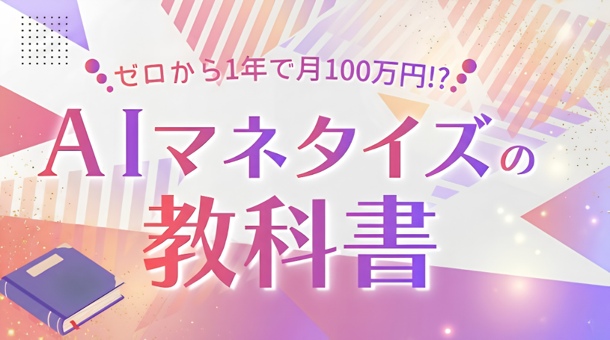

📖 はじめてでも楽しめる4STEP
AIでつくる
大人の絵本づくりガイド
あなたの思い出や人生経験が、
世界にひとつだけの絵本になります。
ChatGPT・画像生成AI・Canvaを使って、はじめての方でも楽しみながら作れる方法を4STEPでご紹介します。
YOUR MEMORIES
こんな思い出も、
絵本にできます。
特別な出来事でなくても大丈夫。
あなたが大切にしてきた記憶や、忘れたくない時間が、絵本の題材になります。
4 EASY STEPS
AI絵本づくりは
たった4STEP
物語をつくる
イラストをつくる
絵本に仕上げる
本として出版する
💬 ChatGPT
物語をつくる
まずは、絵本にしたい思い出をChatGPTに話してみましょう。
文章が上手に書けなくても大丈夫。思い出したことを、普段話すように書くだけでOKです。
✨ コピペして使えます
絵本シナリオ作成プロンプト
🎨 画像生成AI
イラストをつくる
物語ができたら、次は各ページのイラストを作ります。
ここで大切なのは、「毎回ちがう主人公にならないこと」。最初にキャラクターの特徴を決めて、同じ設定を繰り返し使うのがコツです。
✨ コピペして使えます
画像生成用プロンプトを
作るためのプロンプト
KEEP IT CONSISTENT
同じ主人公に見せる
4つのコツ
キャラクター設定を固定する
年齢・髪型・髪色・服装・顔の特徴などを最初に決めておきましょう。
毎回同じ言葉を使う
共通設定そのものを毎回プロンプトに入れるのがポイントです。
お気に入りの1枚を基準にする
参考画像を使えるAIなら、「これが主人公」と決めた画像を基準にすると統一しやすくなります。
文字は画像AIに入れない
イラストだけを作り、本文はCanvaで入れると文字崩れを防ぎやすくなります。
📖 Canva
絵本に仕上げる
イラストがそろったら、Canvaに並べて本文を入れます。
デザインは凝りすぎなくて大丈夫。絵が主役になるようにシンプルに仕上げましょう。
- 1Canvaで絵本用のデザインを作成
- 2作ったイラストをページ順に配置
- 3本文を入れて、フォント・文字サイズ・余白をそろえる
- 4すべて確認したらPDFで書き出す
📚 Amazon KDP
本として出版する
絵本が完成したら、Amazonで紙の本として出版することもできます📚✨
- 1Amazon KDPに登録
- 2「ペーパーバック」を選択
- 3本のタイトル・著者名・カテゴリーなどを入力
- 4本文PDFと表紙データをアップロード
- 5AI生成コンテンツを使用している場合は申告
- 6価格を設定して出版申請
審査が完了すると、Amazonの商品ページから購入できるようになります。
※Amazon KDPの仕様・料金・条件は変更される場合があります。出版時には必ずAmazon KDPの最新公式情報をご確認ください。
実際に作ってみました
『わたしをえらんで』
この絵本は、
私たち夫婦と愛犬ちび子の実話です。
子どものいない私たちにとって、
ちび子はまさに天使のような存在でした。
この絵本を作りながら、
何度も涙が出ました。
ちび子と過ごした時間は、
今でもずっと大切な思い出です。
左右にスワイプして、
ゆっくり読んでみてください。
⚠️ でも、ここで正直にお伝えします。
ここまで読んで、
「AIって、私にもできそう」
「もっと活用してみたい」
そう思った方もいるかもしれません。
でも、AIを使えるようになることと、
それを在宅ワークにつなげることは、
また別のステップです。
私も、同じように迷ってきました。
MY STORY
私も、
ずっと順調だったわけではありません。
借金を抱え、カードの支払いにも追われ、どうしようもないところまで追い込まれた時期がありました。
「このままではダメ」
「人生を変えたい」
そう思って、50代前半から在宅でできる仕事を始めました。
でも、そこからも失敗の連続。いろいろなことに挑戦して、たくさん遠回りしてきました。
だからこそ、
私のように遠回りしてほしくない。
年齢は関係ありません。50代でも、60代でも、始めたいと思ったときがスタートです。
大切なのは、「変わりたい」と思ったときに、本気で一歩を踏み出すこと。
最初から全部できなくても大丈夫。
まず知ること。
そして、ひとつやってみること。
その一歩から始まります🌷
🎁 そんな方のために用意しました
無料プレゼント中🎁
『AIマネタイズの教科書』

📖 教科書の中身を少しだけご紹介！
- 💎 第一章 いま一番始めやすいAIマネタイズ手法
- 💎 第二章 ChatGPT収益化プロンプト
- 💎 第三章 AIマネタイズ神テンプレート
- 💎 第四章 マネタイズのための生成AIツール3選
- 💎 第五章 AI×SNSで収益を生むリアル事例
本書では、「作業効率を劇的に上げる神テンプレート（第三章）」や、単発の仕事で終わらせないための「AI×SNSで毎月安定した収益を生むリアル事例（第五章）」など、自己流ではつまずきやすいポイントを分かりやすくまとめています。
AIを覚えるだけで終わらせず、「それをどう活かしていくのか？」まで、初心者の方にも分かりやすくまとめています。
※本ページでご紹介している内容は、特定の成果や収入を保証するものではありません。結果には、取り組む内容や環境などによって個人差があります。
※Amazon KDP、ChatGPT、Canva、Instagramなど外部サービスの機能・料金・規約・条件は変更される場合があります。ご利用の際は、各サービスの最新の公式情報をご確認ください。